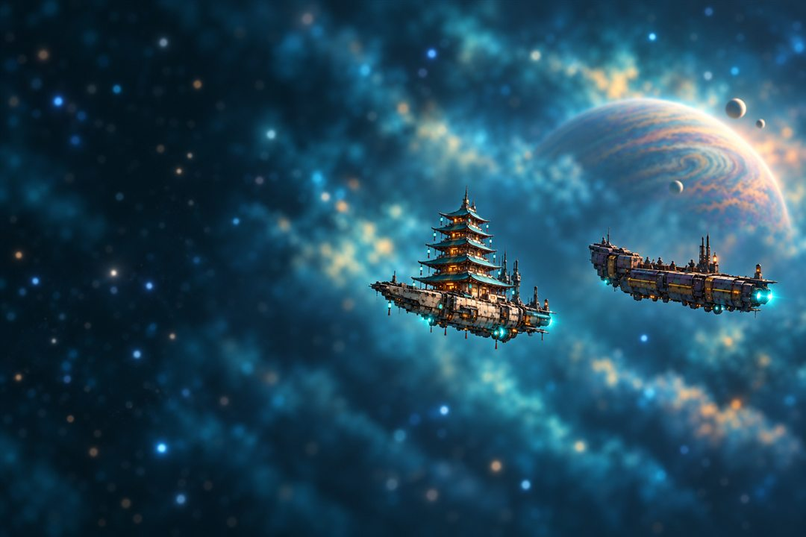

The Globois Control
Sanctimonious space monks with glowing energy axes. They don't want to fight you. They want you to think about what you did. Sighs that stop attacks, Auras that shield, and Redactions that blank your best card. Not mad. Just disappointed.
Old Glow · Aura Farmers · Bioluminati · Burnouts · Lil' Glows